Overview of OpenShift Tools
About OpenShift
OpenShift is Red Hat’s Platform as a Service (PaaS) for applications. It consists of an application platform in the cloud, enabling you to build, test and run applications in a cloud architecture. OpenShift provides disk space, CPU resources, network connectivity, and a runtime environment.
OpenShift is available in three versions: OpenShift Online, Enterprise and Origin. OpenShift Online is the public cloud offering, with free and paid plans, hosted at https://openshift.redhat.com. OpenShift Enterprise is the private cloud offering, obtained through a Red Hat OpenShift subscription and hosted in a private data center. OpenShift Origin is the community and local cloud offering, available to download and install locally for development and testing purposes.
OpenShift has a number of key features to assist you in developing and deploying applications:
-
Unique domain names, or namespaces, support the hosting of your applications. A user account provides you with access to domains, the latter having the potential to be associated with multiple applications.
-
Numerous cartridges give you access to predefined build and runtime environments with popular languages, database and management frameworks. OpenShift can also be extensively customized with the Do-It-Yourself (DIY) cartridge.
-
Different sized gears provide RAM and disk space for your applications and cartridges. You can use a set number of small gears as part of OpenShift Online with Free Plan, a free OpenShift user account, and extend to more gears and bigger gears with OpenShift Online with Silver Plan or OpenShift Enterprise.
-
Built-in administrative and stack management frees you up to focus on code development. OpenShift manages the intricate details of deploying your application to the stack and interfacing with middleware technologies for you.
-
Automatic or manual scaling of the resources supporting your applications ensures that application performance does not suffer as usage increases. OpenShift can create additional instances of your application across more gears and enable clustering.
OpenShift can be accessed via the web interface at https://www.openshift.com/ on the OpenShift website or via the OpenShift command line interface.
About OpenShift Tools
OpenShift Tools is tooling available within the IDE for OpenShift. It provides an alternative way of accessing OpenShift and managing the development of applications deployed on OpenShift servers.
OpenShift Tools consists of a set of wizards and actions, which together provide core functionality for developing OpenShift applications:
-
The tools prepare you for working with OpenShift, by assisting you to create OpenShift user accounts and domains.
-
OpenShift Tools assists you with the essential tasks of setting up your system and the IDE for OpenShift interaction, such as creating connections and generating and uploading SSH keys.
-
When creating and developing OpenShift applications, OpenShift Tools provides wizards for creating new and importing existing OpenShift applications.
-
A variety of actions are available for managing deployed applications, for tasks such as restarting applications, uploading changes to applications, viewing OpenShift server output, editing application cartridges and environment variables, and deleting applications.
Features of OpenShift Tools
Features Overview
The aim of this section is to guide you in using OpenShift Tools:
-
Create OpenShift Online user accounts
-
Connect to OpenShift servers
-
Generate SSH keys and upload them to an OpenShift user account
-
Create and manage domains
-
Create new OpenShift applications from within the IDE
-
Deploy existing workspace applications to OpenShift and import existing OpenShift applications into a workspace
-
Manage deployed OpenShift applications and view information about them
Create an OpenShift Online User Account
To begin using OpenShift Online, you need to create a user account. OpenShift Tools provides the ability to create an OpenShift Online user account from within the IDE.
To create a user account, click the OpenShift Explorer view. If the OpenShift Explorer view is not visible, click Window`→`Show View`→`Other, expand JBoss Tools and double-click OpenShift Ecplorer.
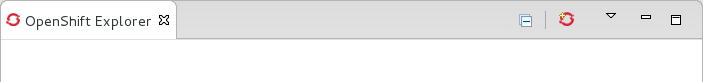OpenShift Explorer view.">
Click the Connect to OpenShift icon
 and
click the link to sign up for an account. This opens
https://openshift.redhat.com/app/account/new in a browser window.
Follow the instructions on the OpenShift web page to create an account.
Once created, you can close the browser window.
and
click the link to sign up for an account. This opens
https://openshift.redhat.com/app/account/new in a browser window.
Follow the instructions on the OpenShift web page to create an account.
Once created, you can close the browser window.

Management of your OpenShift Online user account, such as changing or resetting your password, must be carried out through the OpenShift management console at https://openshift.redhat.com/app/login?redirectUrl=%2Fapp%2Fconsole.
Connect to OpenShift
Once you have an OpenShift user account, you can connect to OpenShift and then create domains and applications. The procedure below guides you through connecting to OpenShift for the first time in the IDE.
-
In the OpenShift Explorer view, click the Connect to OpenShift icon
.
-
Complete the fields and options as detailed:
-
From the Connection list, select New Connection.
-
If you want to use a server other than the default at https://openshift.redhat.com, clear the Use default server check box and in the Server field type the address of the server. This option is most relevant when you are using OpenShift Enterprise or Origin servers.
-
In the Username and Password fields, type your OpenShift user account authentication information.
-
If you want the Password field to automatically populate for this connection in future, select the Save password check box.
The password is retained in secure storage provided by the IDE. To manage the settings for secure storage, click Window`→`Preferences, expand General`→`Security and select Secure Storage.
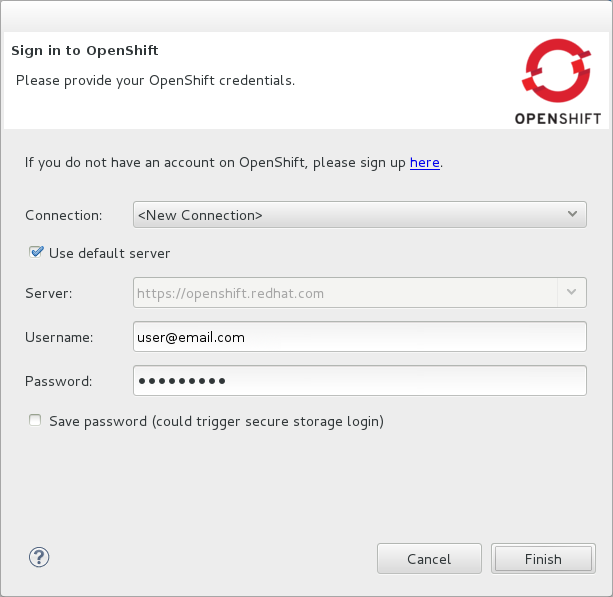Connection list"> 3. Click Finish for OpenShift Tools to connect to OpenShift.
If your credentials are incorrect, the Sign in to OpenShift wizard remains open for you to change your authentication information.
If you selected for your password to be saved, you are prompted to enter your secure storage password or, if this is your first use of secure storage, you are prompted to set a secure storage password.
Once your credentials are verified as correct, the wizard closes and a live OpenShift connection is listed in the OpenShift Explorer view.
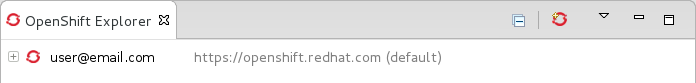
-
When you close the IDE, any live OpenShift connections will be disconnected but they can be easily reestablished. OpenShift Tools lists previous connections in the OpenShift Explorer view until cleared by you. In the OpenShift Explorer view, double-click or expand the appropriate connection to open an automatically completed connection wizard. Type your password or, if using the saved password facility, the master password and click Finish.
Manage a Connection
Using OpenShift Tools, you can view and manage live OpenShift connections.
- View information about a connection
-
In the OpenShift Explorer view, right-click the connection and click Properties. The Properties view opens and shows information about the associated domains, key and user account. The Key parameter is unique to the connection and it is used by the IDE for identification purposes.
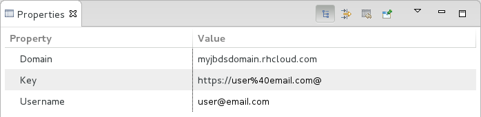OpenShift Explorer view"> Refresh information about a connection:: In the OpenShift Explorer view, right-click the connection and click Refresh. Information is retrieved from OpenShift and the OpenShift Explorer view updated as appropriate. This action is useful if you are simultaneously making changes to your domains and applications in the IDE and the OpenShift web interface or command line interface. Additionally, it may be used to recover from errors. Delete a connection:: In the OpenShift Explorer view, right-click the connection and click Remove Connection.
Generate and Upload SSH Keys to OpenShift
SSH keys are essential when working with OpenShift. They enable you to develop and access deployed applications. SSH keys are also used to control access of other contributors to your OpenShift applications. SSH keys must be uploaded to the OpenShift server and, as detailed in the procedure below, OpenShift Tools can assist with both the generation and uploading of SSH keys to OpenShift.
-
In the OpenShift Explorer view, right-click the connection and click Manage SSH Keys.
-
To create a new SSH private-public key pair, click New.
-
Complete the fields and options as detailed:
-
In the Name field, type a name for the key pair that will be used by OpenShift to distinguish this key pair from others associated with your account.
-
From the Key Type list, select SSH_RSA.
-
Ensure the SSH2 Home field contains the location where you want to create the files associated with the key pair. To change the location, clear the Default check box and click Browse to navigate to the desired location.
The default location for creating SSH key files is determined by the SSH information for the IDE. The default location can be altered by clicking Windows`→`Preferences, expanding General`→`Network Connections, selecting SSH2 and changing the location in the SSH2 home field of the General tab.
-
In the Private Key File Name field, type a name for the private key file.
-
In the Private Key Passphrase field, type a passphrase for use in accessing the private key. This field is not mandatory and can be left empty if you want.
-
In the Public Key File Name field, type a name for the public key file. Typically the file name of the public key is that of the private key with .pub appended.
 4. Click Finish. The SSH key pair is generated and the public key
automatically uploaded to OpenShift.
5. Click OK to close the Manage SSH Keys window.
4. Click Finish. The SSH key pair is generated and the public key
automatically uploaded to OpenShift.
5. Click OK to close the Manage SSH Keys window.
-
Manage SSH Keys
OpenShift Tools provides actions for managing the SSH keys of your OpenShift account.
- Upload an existing public SSH key to OpenShift
-
In the OpenShift Explorer view, right-click the connection and click Manage SSH Keys. Click Add Existing. In the Name field, type a name for the key that will be used by OpenShift to distinguish the key from others associated with your account. Click Browse to navigate to and select the public key file. Click Finish and click OK to close the Manage SSH Keys window.
You must also inform the IDE of the location of the private key file. Click Window`→`Preferences, expand General`→`Network Connections and selecting SSH2. Click Add Private Key and locate the private key file. Click Apply and click OK to close the Preferences window. Remove a public SSH key from OpenShift:: In the OpenShift Explorer view, right-click the connection and click Manage SSH Keys. From the SSH Public Keys table select the key you want to remove from your OpenShift account and click Remove. At the prompt asking if you are sure you want to remove the key, click OK. Click OK to close the Manage SSH Keys window.
Remove only disassociates keys with your OpenShift account. The files associated with a removed SSH public-private key pair still exist in the local location where they were generated and can be uploaded again to OpenShift using the Add Existing action.
- Refresh the SSH key information associated with OpenShift
-
In the OpenShift Explorer view, right-click the connection and click Manage SSH Keys. Click Refresh and click OK to close the Manage SSH Keys window. It may be necessary to use this action if you make changes to your OpenShift SSH key settings through the OpenShift web interface while the IDE is open with a live OpenShift connection.
Create a Domain
Once you have an OpenShift user account, you need to create domains in which to host your applications. Note that user accounts for OpenShift Online with Free plan can be associated with one domain only. The procedure below guides you through creating a new domain but you first need a live connection. If you already have a domain associated with your user account then domain information is automatically passed to the IDE when a live connection is started.
-
In the OpenShift Explorer view, right-click the connection and click New`→`Domain. Alternatively, right-click the connection, click Manage Domains and click New.
-
In the Domain Name field, type the name of the domain you would like to use. When the domain is created, the name you provide is appended with the cloud address, for example .rhcloud.com for OpenShift Online.
-
Click Finish. Domain names must be unique so if the name you have chosen is already in use you will see a warning. In this case, choose another name and try again until you have a unique one.
 Domain Name field">
Domain Name field">
|
There are restrictions on the name you can use for a domain. Names must consist only of alphanumeric characters and can have a maximum length of 16 characters. |
Manage a Domain
OpenShift Tools provides actions for managing the domains of your OpenShift account.
- View the domains associated with a connection
-
In the OpenShift Explorer view, right-click the connection and click Manage Domains. Alternatively, right-click the connection and click Properties. The Properties view opens, where the first row of the table contains the names of the domains associated with the connection.
- Rename a domain
-
In the OpenShift Explorer view, right-click the domain and click Edit Domain. Alternatively, right-click the connection and click Manage Domains. From the Domains table, select the domain and click Edit. In the Domain Name field, type the new name of the domain and click Finish. You cannot change the name of a domain which has associated applications.
Renaming your domain changes the public URLs of applications you later create.
- Delete a domain
-
In the OpenShift Explorer view, right-click the domain and click Delete Domain. Alternatively, right-click the connection and click Manage Domains. From the Domains table, select the domain and click Remove. You cannot delete a domain that has any applications associated with it unless, at the prompt, you select the Force applications deletion check box. Click OK to complete the deleting action.
Forcing the deletion of applications results in the applications being deleted from the OpenShift server. The projects of applications will still be visible in the Project Explorer and Git Repositories view as the local clone of the Git repository for projects is not deleted.
Deploy a New or Existing Application on OpenShift
OpenShift Tools provides the OpenShift Application wizard to assist you in creating and deploying OpenShift applications.
As detailed in the procedure below, OpenShift applications can be created using three sources: an existing workspace project, a Git source or a default project template. For an existing workspace project, the wizard merges the existing project contents with the key metadata files from a new OpenShift application so that the application can be deployed on OpenShift. For a Git source, the wizard uses the source as the new OpenShift application so the source must be OpenShift-enabled, namely have a .openshift directory and have the openshift profile specified in the pom.xml. For a project template, the templates are provided by OpenShift.
In addition to deploying your OpenShift applications, the wizard assists you in setting up linked remote (OpenShift server) and local Git repositories containing the original and clone of your project, respectively. You can then push project changes to OpenShift via Git or allow the OpenShift server adapter to do it for you.
|
You must have SSH keys set up first in order to successfully proceed with the OpenShift Application wizard. |
-
In the OpenShift Explorer view, right-click the connection or domain and click New`→`Application. Alternatively, in JBoss Central click OpenShift Application, after which you are prompted to select an OpenShift connection and provide your user authentication information.
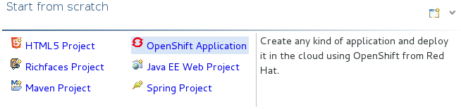JBoss Central"> 2. If you do not have a domain associated with the connection, the wizard prompts you to create one. In the Domain Name field, type the name of the domain you would like to use and click Finish. Domain names must be unique so if the name you have chosen is already in use you will see a warning. In this case, choose another name and try again until you have a unique one. 3. Complete the fields and options about the OpenShift application as detailed: * From the Domain list, select the domain to which to assign the application. * In the Name field, type a name for the new OpenShift application. There are restrictions on the name you can use for an application. Names must consist only of alphanumeric characters. In the case of an existing workspace project, for simplicity you may choose the OpenShift application name to be the same as the name of the workspace project. * From the Type list, select a runtime server. This will ensure the necessary core programming or technology cartridge is added to your application. * From the Gear profile list, select the gear size. This is RAM and disk space required by your applications and its cartridges. If you are using OpenShift Online with Free Plan, you have access to small gears only. * If you want OpenShift to automatically increase the instances of your application and enable clustering as usage increases, select the Enable scaling check box. * From the Embedded Cartridges list, select the functionality you want to enable in your application. This will add associated capabilities and support to your application. * To specify that the new application is to be based on source code from an existing Git repository, click Advanced and clear the Use default source code check box. In the Source code field, type the URL of the source code location. * To declare environment variables to be used when the application is run, click Advanced and click Environment Variables. Click Add to declare an environment variable. In the Name and Value fields, type a name and value for the environment variable respectively. Click OK to save the information and click OK to close the Environment Variables window.
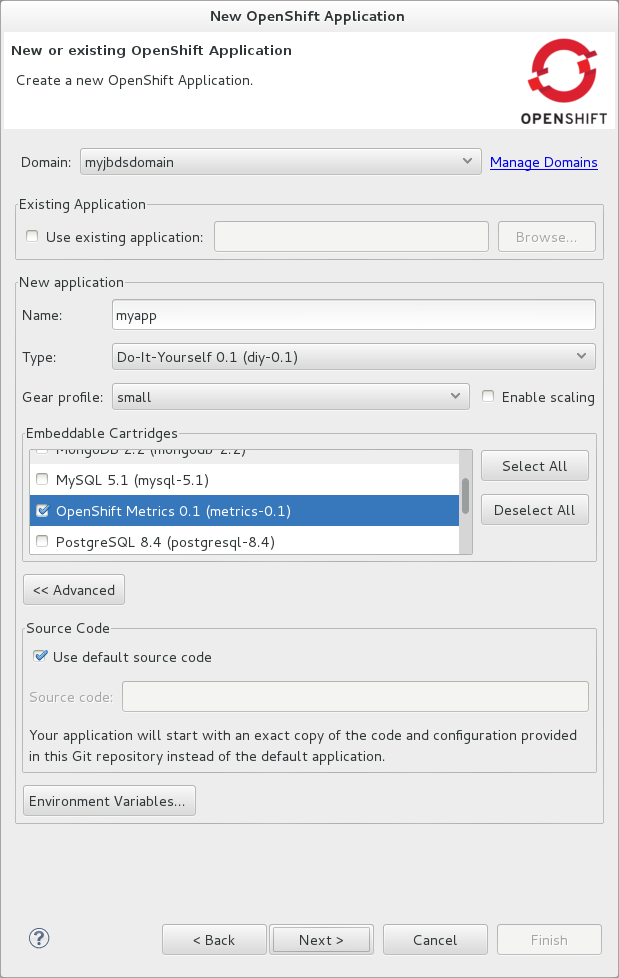 4. Click Next. 5. Complete the fields and options as detailed: * To specify that the new application is to be based on an existing workspace project, clear the Create a new project check box and in the Use existing project field type the name of the project or click Browse to locate the project. Otherwise, ensure the Create a new project check box is selected. * Ensure the Create and set up a server for easy publishing check box is selected. This option automatically creates an OpenShift server adapter for the application, enabling you to easily upload changes made in the IDE to the OpenShift server. * To disable Maven builds, check the Disable automatic Maven builds when pushing to OpenShift check box. This informs OpenShift not to launch the Maven build process when the Maven project is pushed to OpenShift but to put the deployment straight into the deployments folder. It is useful when you want to push applications already built for deployment rather than source code. 6. Click Next. 7. The Git Clone Destination field shows the location to be used for the local Git repository. The location must already exist to be able to proceed with the wizard. To change the location, clear the Use default clone location check box and type the location in the Git Clone Destination field or click Browse to navigate to the location.
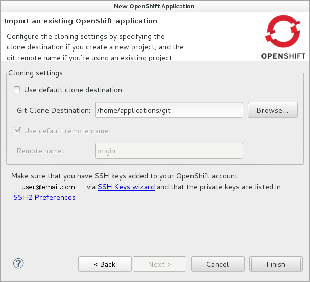Git Clone Destination field shows the location to be used for the local Git repository. The location must already exist to be able to proceed with the wizard. To change the location"> 8. Click Finish. If you are prompted that the authenticity of the host cannot be established and asked whether you want to continue connecting, check that the host name matches that of your application and domain and click Yes. 9. At the prompt asking if you want to publish committed changes to OpenShift, click Yes. The progress of the application creation process is visible in the Console view.
Once created, the application is listed under the connection and domain in the OpenShift Explorer view. The application type proceeds the application name. The project is also listed in the Project Explorer and Git Repositories views, where the details proceeding the application name indicate the current Git branch and status compared to the remote repository. Additionally, the server adapter for the application is visible in the Servers view.
|
To view the project in the Git Repositories view, in the Project Explorer view right-click the project name and click Team`→`Show in Repositories View. Alternatively, click Window`→`Show View`→`Other, expand Git and double-click Git Repositories. |
Import a Deployed OpenShift Application into the IDE
All applications deployed on OpenShift are listed under live connections in the OpenShift Explorer view. But only the project files of OpenShift applications created through the IDE are immediately available in the Project Explorer and Git Repositories views. If you want to work on the project files associated with an application, you must first import the application. OpenShift Tools can assist you to import your deployed OpenShift applications into the IDE, as detailed in the procedure below.
-
Click File`→`Import, expand OpenShift and double-click Existing OpenShift Application. Alternatively, in the OpenShift Explorer view, right-click the application and click Import Application.
-
Complete the fields and options as detailed:
-
From the Domain list, select the domain of the application.
-
Ensure the Use existing application check box is selected and type the name of the application in the text field. This field has an automatic completion feature to assist you in typing the application name or click Browse to see a list of all of your applications associated with the domain.
Project names in the IDE workspace must be unique. If the name of the application you want to import is identical to an existing project in the workspace, the OpenShift Tools will not complete the import. To work around this constraint, you can import the OpenShift application to another workspace or change the name of either the conflicting project or application.
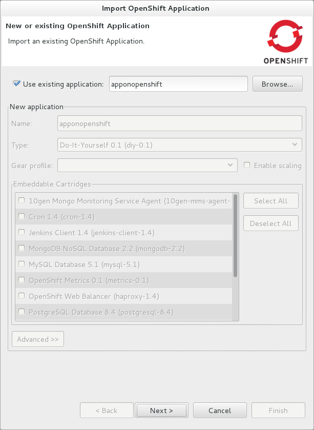Use existing application check box is selected and type the name of the application in the text field. This field has an auto-completion feature to assist you in typing the application name or click Browse to see a list of all of your applications associated with the connection."> 3. Click Next. 4. Complete the fields and options as detailed: * Ensure the Create a new project check box is selected. This option creates a new project in your IDE workspace for the existing OpenShift application. * Ensure the Create and set up a server for easy publishing check box is selected. This option automatically creates an OpenShift server adapter for the application, enabling you to easily upload changes made in the IDE to the OpenShift server. * To disable Maven builds, check the Disable automatic Maven builds when pushing to OpenShift check box. This informs OpenShift not to launch the Maven build process when the Maven project is pushed to OpenShift but to put the deployment straight into the deployments folder. It is useful when you want to push applications already built for deployment rather than source code. 5. Click Next. 6. The Git Clone Destination field shows the location to be used for the local Git repository. The location must already exist to be able to proceed with the wizard. To change the location, clear the Use default clone location check box and type the location in the Git Clone Destination field or click Browse to navigate to the location. 7. Click Finish. If you are prompted that the authenticity of the host cannot be established and asked whether you want to continue connecting, check that the host name matches that of your application and domain and click Yes. 8. OpenShift Tools modifies the .gitignore file on importing the application. At the prompt asking if you want to publish committed changes to OpenShift, click Yes. The progress of the import process is visible in the Console view.
-
Once imported, the project is listed in the Project Explorer and Git Repositories veiws, where the details proceeding the application name indicate the current Git branch and status compared to the remote repository. Additionally, the server adapter for the application is visible in the Servers view.
Generate a Server Adapter for an Application
In order to easily publish changes to a deployed OpenShift application, each application needs a server adapter. The OpenShift Application wizard can automatically generate server adapters for new or imported OpenShift applications if you select the Create and set up a server for easy publishing check box. But OpenShift also provides an action to assist you in generating server adapters for OpenShift application that already exist in the IDE, as detailed in the procedure below. You can use this action if you need to regenerate a deleted server adapter for an OpenShift application or if you create or import an OpenShift application and do not select the Create and set up a server for easy publishing check box.
-
In the OpenShift Explorer view, right-click the application and click Create a Server Adapter.
-
Complete the fields and options as detailed:
-
From the list of server types, expand OpenShift and select OpenShift Server.
-
The Server's host name and Server name field are automatically completed. The Server's host name field contains the host name of the server and the Server name field contains the name by which the server adapter is know in the Servers view. You can edit these values as appropriate by typing in the fields.
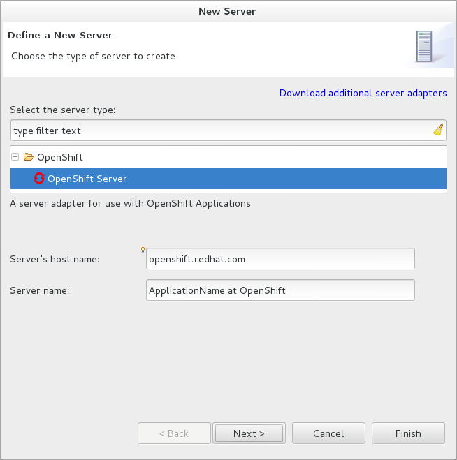 3. Click Next. 4. Complete the fields and options as detailed: * Ensure the Connection, Domain Name, Application Name and Deploy Project fields contain the correct information relating to the application for which you want to generate the server adapter. * In the Remote field, type the alias for the remote Git repository. For OpenShift Online applications this is origin. * In the Output Directory field, type the location where archived projects for deployment are to be stored or click Browse to navigate to the location.
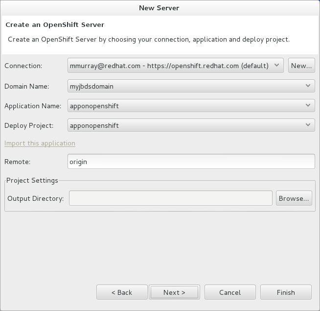Use existing application check box is selected and type the name of the application in the text field. This field has an automatic completion feature to assist you in typing the application name or click Browse to see a list of all of your applications associated with the connection."> 5. Click Next. 6. From the Available list, select the project for which the server adapter is being generated and click Add. The application is now listed under Configured. 7. Click Finish for OpenShift Tools to generate the server adapter. Once generated, the server adapter is listed in the Servers view.
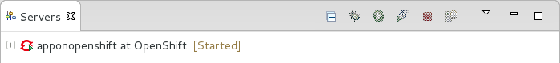
-
View a Deployed Application and Associated Information
OpenShift Tools provides actions for viewing deployed OpenShift applications and information about them.
- View a deployed application
-
In the OpenShift Explorer view, right-click the application and click Web Browser. A browser tab opens displaying your deployed application. Alternatively, in the Servers view, right-click the server adapter for the application and click Show In`→`Web Browser.
- View information about an application
-
In the OpenShift Explorer view, right-click the application and click Details. The displayed information includes the public URL of the application, application type, and remote Git repository location. Click OK to close the Details window.
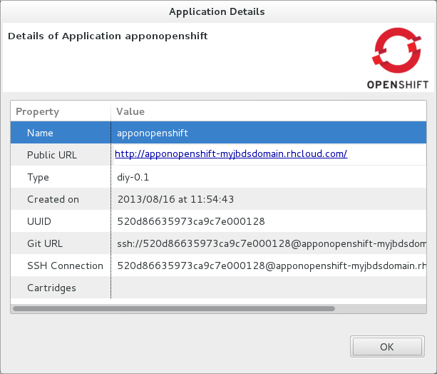OpenShift Explorer view"> View output from the OpenShift server:: In the OpenShift Explorer view, right-click the application and click Tail files. Alternatively, in the Servers view right-click the server adapter of the application and click OpenShift`→`Tail files. The Tail Log Files window opens, with either the default retrieval syntax or last used syntax for this application in the Tail options field.
To change the retrieval command, in the Tail options field type the appropriate syntax. To specify the gears for which to show the server logs, from the table select the check boxes of the appropriate gears. Click Finish for OpenShift to retrieve the output, which is displayed in a distinct Console view for each gear.
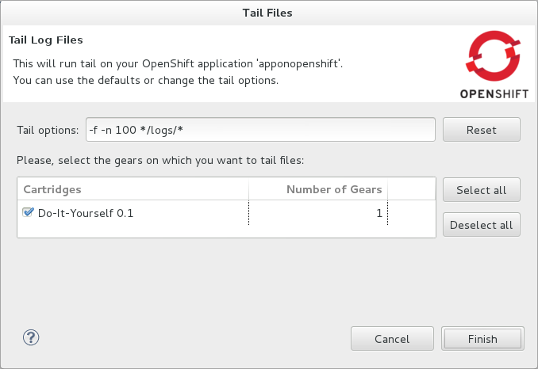 View values of variables associated with an application:: In the OpenShift Explorer view, right-click the application and click All Environment Variables. Variable names and values are listed in the Console view. Alternatively, in the Servers view, right-click the server adapter of the application and click OpenShift`→`All Environment Variables.
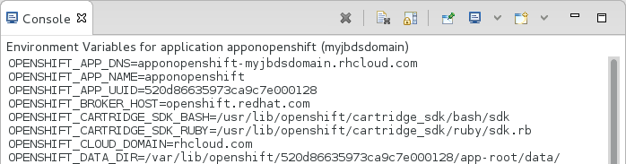OpenShift Explorer view"> View properties of cartridges associated with an application:: In the OpenShift Explorer view, right-click the cartridge and click properties. The Properties view opens and lists information about the cartridge. View information about the server of an application:: In the Servers view, double-click the server adapter for the application. A Server Editor opens, enabling viewing and editing of server details. To save any changes, press Ctrl+S or click File`→`Save or click the Save icon. Refresh information about an application:: In the OpenShift Explorer view, right-click the connection, domain, application or cartridge and click Refresh. Information is retrieved from OpenShift and the OpenShift Explorer view is updated as appropriate. This action is useful if you are simultaneously making changes in the IDE and the OpenShift web interface or command line interface to your domain and applications. Additionally, it may be used to recover from errors.
Manage a Deployed Application
OpenShift Tools provides actions for developing and managing deployed OpenShift applications.
- Upload modifications to a deployed application
-
In the Severs view, right-click the server adapter for the application and click Publish. At the prompt asking if you want to publish to OpenShift by committing changes to Git, you can customize the default commit message Commit from JBoss Tools. Click Yes and changes, together with the commit message, are pushed to the remote Git repository. Additionally, the application is automatically updated on the OpenShift server and the Console view displays OpenShift server output.
To view a log of changes to the local git repository, in the Git Repositories view, right-click a repository and click Show In`→`History. The History view opens, showing a log of commits for the local Git repository.
- Edit environment variables associated with an application
-
In the OpenShift Explorer view, right-click the application and click Edit Environment Variables. Click Add, Edit or Remove to customize the environment variables. Click Finish to close the window.
- Add or remove markers associated with an application
-
In the Project Explorer view, right-click the application and click OpenShift`→`Configure Markers. Select or clear the check boxes of markers as desired. Information about markers is given in the Marker Description section of the Configure OpenShift Markers Window. Click OK for your marker choice to be applied to the application.
 Project Explorer view">
Add or remove cartridges associated with an application::
In the OpenShift Explorer view, right-click the application and
click Edit Embedded Cartridges. Select or clear the check boxes of
cartridges as desired. Click Finish for your cartridge choice to be
applied to the application. You are prompted if the cartridges you
have chosen to add or remove require further action, such as the
addition of prerequisite cartridges or removal of conflicting
cartridges. You can choose to ignore or apply the suggestions of the
prompt.
Project Explorer view">
Add or remove cartridges associated with an application::
In the OpenShift Explorer view, right-click the application and
click Edit Embedded Cartridges. Select or clear the check boxes of
cartridges as desired. Click Finish for your cartridge choice to be
applied to the application. You are prompted if the cartridges you
have chosen to add or remove require further action, such as the
addition of prerequisite cartridges or removal of conflicting
cartridges. You can choose to ignore or apply the suggestions of the
prompt. OpenShift Explorer view">
Restart an application::
In the OpenShift Explorer view, right-click the application and
click Restart Application. Alternatively, in the Servers tab
right-click the server adapter of the application and click
OpenShift`→`Restart Application.
Forward remote ports::
You can forward the remote ports of the OpenShift server to your
system to enable access to various services, such as MySQL. Port
forwarding is available for all OpenShift applications, including
scalable ones.
OpenShift Explorer view">
Restart an application::
In the OpenShift Explorer view, right-click the application and
click Restart Application. Alternatively, in the Servers tab
right-click the server adapter of the application and click
OpenShift`→`Restart Application.
Forward remote ports::
You can forward the remote ports of the OpenShift server to your
system to enable access to various services, such as MySQL. Port
forwarding is available for all OpenShift applications, including
scalable ones.Your application must be running before attempting to configure port forwarding.
In the OpenShift Explorer view, right-click the application and click Port forwarding. Alternatively, in the Servers view right-click the server adapter of the application and click OpenShift`→`Port forwarding.
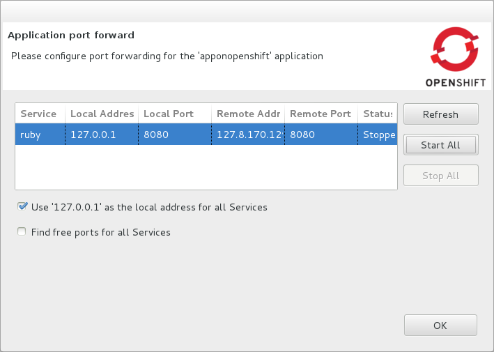OpenShift Explorer view">
After checking the authenticity of SSH keys, the Application port forward window opens. Before commencing port forwarding, there are a number of options you can set:
-
By default, the local address is 127.0.0.1. If this is unavailable, a random available address is allocated. To set the local address to be the same as the remote address, clear the Use '127.0.0.1' as the local address for all Services check box.
-
By default, the local port numbers are the same as the remote port numbers. To set independent local port numbers, select the Find free ports for all Services check box.
To commence port forwarding, click Start All. Click OK to close the Application port forward window. Delete a server adapter for an OpenShift application:: In the Servers view, right-click the server adapter for the application and click Delete. At the prompt asking if you are sure you want to delete the server adapter, click OK. Delete an application:: In the OpenShift Explorer view, right-click the application and click Delete Application. At the prompt asking if you are sure you want to destroy the application, select OK. The progress of the deleting process is shown in the activity bar in the lower right of the IDE window. To open the Progress view and see more detailed progress information or cancel the deleting process, double-click on the activity bar.
Deleting applications results in the applications being deleted from the OpenShift server. The projects of applications are still be visible in the Project Explorer and Git Repositories view as the local Git repository copies of projects are not deleted. Additionally, any server adapters for deleted OpenShift applications are still listed in the Servers view but they are invalid.
-
Customizing OpenShift Tools
Customizing Overview
The aim of this section is to guide you in customizing OpenShift Tools:
-
Specify the timeout behavior for OpenShift requests
Change the Timeout Behavior of OpenShift Requests
You may find that some requests made to OpenShift require a long time to complete and do not finish within the IDE default timeout limit of 120 seconds. For example, some of the OpenShift quickstarts take a long time to checkout the associated large source code. To resolve the timeout restriction, you can modify the default timeout limit to meet your requirements.
To modify the timeout limit, click Window`→`Preferences, expand JBoss Tools and select OpenShift. In the Remote requests timeout field, type the required timeout limit in seconds. Click Apply and click OK to close the Preferences window.